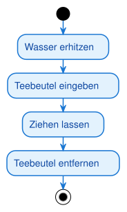

Aufgabe 1 [leicht]: Tee zubereiten
Modelliere den Ablauf des Teekochens als einfache Sequenz (keine Entscheidungen, keine Parallelität): Wasser wird erhitzt, ein Teebeutel wird in die Tasse gegeben, der Tee zieht eine Weile, danach wird der Teebeutel wieder entfernt.
Musterlösung

@startuml
skinparam ActivityStartColor black
skinparam ActivityEndColor black
skinparam ActivityBackgroundColor #E3F2FD
skinparam ActivityBorderColor #1976D2
skinparam ActivityFontColor #0D47A1
!pragma useVerticalIf on
start
:Wasser erhitzen;
:Teebeutel eingeben;
:Ziehen lassen;
:Teebeutel entfernen;
stop
@enduml
Eine reine Sequenz braucht nur Startknoten, Aktionen in fester Reihenfolge und einen Endknoten. Keine Rauten, keine Balken — das ist der einfachste Fall eines Aktivitätsdiagramms.